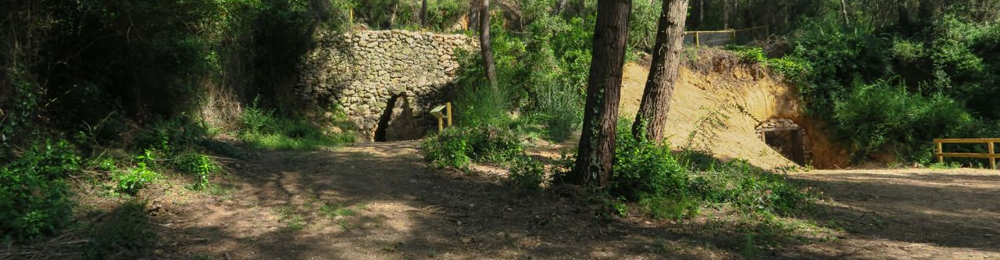

Ruta · Vallirana
Us proposem aquesta curta passejada familiar pel sector de Can Prunera a Vallirana i descobrir una de les activitats més significatives del nostre poble : l'extracció de pedra per a coure-la i…